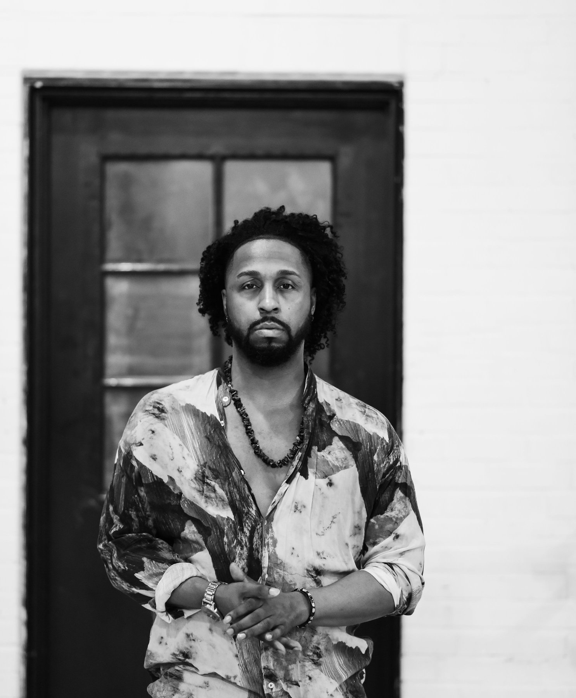
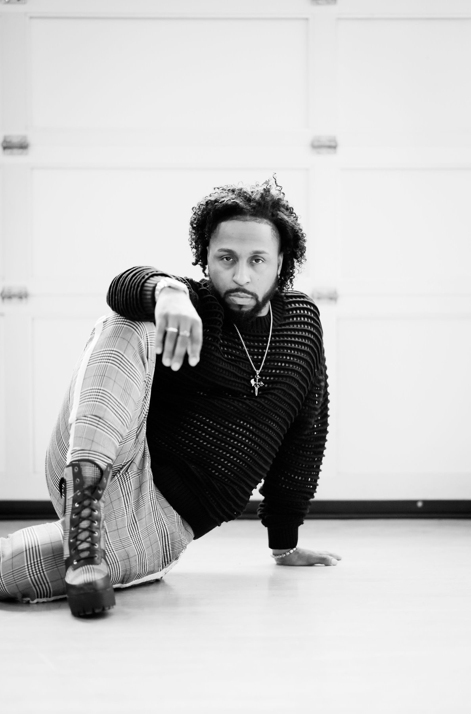

Isaiah Rashaad
Artist. Choreographer. Entertainer. Model.
Seattle-based, built for anywhere. Confidence comes first. The rest follows.
Get in Touch
Isaiah Rashaad is a Seattle-based artist, choreographer, entertainer, and model whose work spans the full width of performance: from coaching aspiring artists in movement and stage presence to contributing to productions for artists like Chris Brown, Rihanna, Justin Bieber, Eminem, and Kanye West, and representing brands including Nike, Adidas, Chanel, and Volkswagen.
Through his training company Zay's BAEs and the umbrella brand A Day With Zay, he teaches movement the way he lives it: as a vehicle for confidence, community, and self-expression. His mission is to help upcoming artists utilize their gifts and be acknowledged as the main act, not the supporting act. Every class, private session, and training program is designed to give students "a voice, a motive, a reason and an unforgettable experience to express their values, insecurities, fears, emotions, lifestyles and creative concepts collectively in a safe and embracive space."
He trains dancers and performers at all levels at Youngstown Cultural Arts Center in Seattle and beyond, with programming that includes Back to BAEsics heels curriculum, ZB Performance Training Co., and artist development coaching for singers and performers. His work is grounded in one belief: when people are given the right environment and the right guidance, they find out they can do things they never thought possible.
Bio sourced from Zay's EPK and grant materials, pending his final edit.

Brands I've Worked With
Commercial dance talent, brand campaigns, and on-camera representation.


Artists I've Worked With
I built this because I believe confidence transforms people. Not just in heels. Not just on a stage. In their whole lives. When someone walks into my class scared to move and walks out doing something they swore they never could, that is the whole point.
I want every class, every event, every collab to carry that energy. You belong here. Whatever door you came through.
Isaiah Rashaad, Founder, A Day With Zay"Always leave your heart in your art."
Isaiah Rashaad, Founder, A Day With Zay
"An attitude of gratitude."
Watch
Press and Media
Choreographer. Entertainer. Creative. Zay has taught, performed, and represented his craft across Seattle and beyond. View or download his full performance resume below.